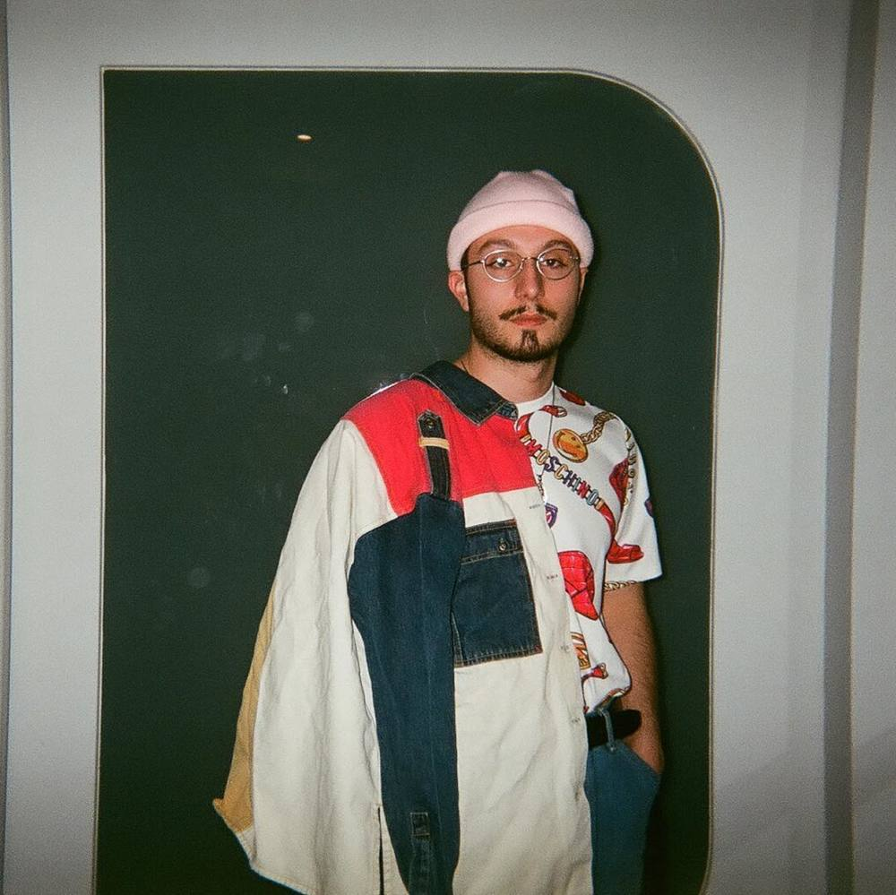
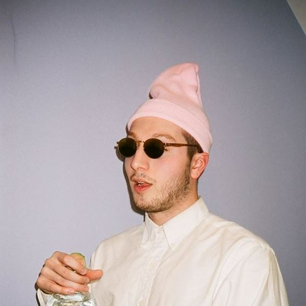

bbno$ doesn’t pull any punches. When it comes to his music, it’s all fun and games. And his lack of self seriousness is seriously refreshing. Born in Vancouver as Alexander Gumuchian, bbno$ is currently based in Kelowna – deep in the interior of British Columbia. He’s finishing up a degree in Kinesiology but he doesn’t plan on using it. As he puts it: “I told my academic advisor my post-grad plan is ‘fuck school, I’m gonna be a rapper forever’.” He is best known for his and Y2K’s 2019 single “Lalala” and his associations with Yung Gravy. Gumuchian has over 18 million monthly streamers on Spotify as of September 2019.
best album
Y2K & bbno$
"Lalala" - Single